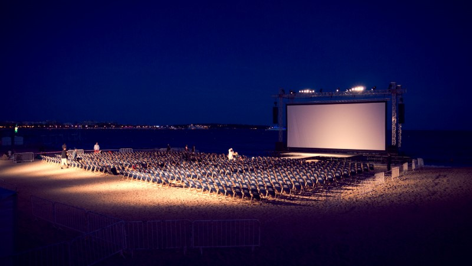

Due to a collision with the Cannes Film Festival this week, there will be no screening in Amphi, but most of the regulars will be at the beach in Cannes to watch For a Few Dollars More, a classic spaghetti western by Sergio Leone. Feel free to join us, it's free!
The movie starts at 21:30, we plan to show up anywhere between 17:00 and 20:00, the earlier the better seats, they're distributed on a first-come, first-serve basis.
Most of planning happens in the Facebook group, drop by if you're interested. You can find the rest of the program for the festival here. The rest of the screenings include The Good, the Bad and the Ugly, Pulp Fiction and Purple Rain, so there's lots to look forward to if you got the evenings off the coming weeks.